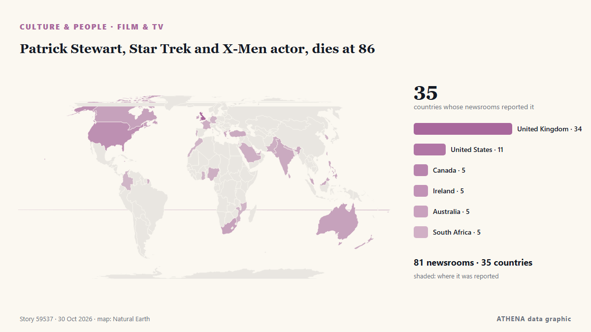

السينما والتلفزيون
| 18 أكتوبر | 1 |
|---|---|
| 19 أكتوبر | 0 |
| 20 أكتوبر | 0 |
| 21 أكتوبر | 0 |
| 22 أكتوبر | 1 |
| 23 أكتوبر | 2 |
| 24 أكتوبر | 2 |
| 25 أكتوبر | 0 |
| 26 أكتوبر | 2 |
| 27 أكتوبر | 7 |
| 28 أكتوبر | 1 |
| 29 أكتوبر | 3 |
| 30 أكتوبر | 1 |
| 31 أكتوبر | 0 |
تُعرض العناوين بالإنجليزية كما نُشرت.

Patrick Stewart, Star Trek and X-Men actor, dies at 86
Sir Patrick Stewart, the acclaimed British actor best known for playing Captain Jean-Luc Picard in Star Trek: The Next Generation and Professor Charles Xavier in the X-Men film franchise, has died at… من Gulf News
European Film Festival Returns to Riyadh for Fifth Edition with 16 Films
RIYADH: The fifth edition of the European Film Festival in Riyadh will feature 16 films from 16 European countries, the Delegation of the European Union to Saudi Arabia has announced. من Arab News
Jailer 2 Box Office Collection Day 14 Live Update: Rajinikanth film eyes Rs 500 crore mark in India
Dubai: Rajinikanth's Jailer 2 has become the fourth highest-grossing Tamil film of all time, just one week after its release. من Gulf News
Mexico brings Día de Muertos tradition to Makati
The Embassy of Mexico, in partnership with Museo ng Makati and Tahanan Pottery Studio, has launched an exhibition celebrating Día de Muertos, or Day of the… من Daily Tribune
'The Pitt' star Noah Wyle named People’s Sexiest Man Alive for 2026
Noah Wyle said he initially thought the honour was a prank after being named People magazine’s Sexiest Man Alive for 2026. من IOL
Bollywood actor Tiger Shroff survives shooting attempt in Mumbai
Videos showed gunmen firing shots at Shroff's car while it was moving slowly past a crowd. من BBC News
What to read before you go see that new documentary on Elizabeth Holmes
Ahead of "You Can See Everything" hitting theaters, let's rewind the last decade and review some of the most significant news tied to Elizabeth Holmes, who was convicted in 2022… من STAT News
Wicker stars talk steamy memes as film hits theatres
Olivia Colman and Alexander Skarsgård bring the fable to the big-screen. من National Post
Coroner calls for TGA to review unapproved peptides after death of Australian actor
Richard Norton, 75, went into cardiac arrest in March 2025 after injecting prescribed but unapproved CJC1295 and ipamorelin Get our breaking news email, free app or daily news podcast The death of an… من The Guardian
Zombie walks and horror nights: Halloween events across France in 2026
This year, Halloween falls on Saturday, October 31st, making it a good year for a weekend of spooky events. من The Local France
Chania Film Festival Showcases 400 Films from 53 Countries
The 14th Chania Film Festival continues in Crete through 1 November, featuring 400 films from 53 countries, special tributes and educational events. من Greek City Times
Kyrgyz film “Aitmatov” to open International Film Festival in Istanbul
The Kyrgyz feature film Aitmatov , directed by Kanybek Kalmatov, has been selected as the opening film of the 6th Korkut Ata Film Festival of the Turkic… من 24.kg (English)
Test your Halloween movie knowledge with our spooky quiz
It's officially spooky season! But how well do you really know your slashers? من ABC News Australia
Matthew Perry never felt enough: Addiction, betrayal, death — 10 revelations from Netflix doc
Nearly three years after Matthew Perry died at 54, Netflix’s docuseries The One About Matthew Perry gives a closer look at the man behind Chandler Bing. من Gulf News
Asavela Mqokiyana to appear in KZN court after alleged 198km/h speeding
Actress and model Asavela Mqokiyana allegedly drove at 198km/h in a 120km/h zone on the N2 near Scottburgh, according to KwaZulu-Natal transport authorities. من IOL
Australian broadcaster tells rightwing populist One Nation party to stop using Bluey in political cartoons
Video shows beloved blue heeler in a violent political cartoon featuring Australia’s prime minister. من The Independent
'After Breaking Bad, Prison Break has begun in Tamil Nadu': Stalin slams Vijay govt over Theni jailbreak
MK Stalin questioned how jailbreaks could happen in 2026 despite improvements in security arrangements and surveillance facilities. من Hindustan Times
'Maxxing' selected as Dictionary.com word of the year
"Whatever we're doing, we want to push it further," said an expert on why Americans are embracing the term, which is short for maximising. من BBC News
Timothee Chalamet and Zendaya face off in dramatic trailer for Dune: Part Three
The upcoming film is the final instalment in the hit sci-fi franchise, based on the Frank Herbert novels. من The Irish News (Belfast)